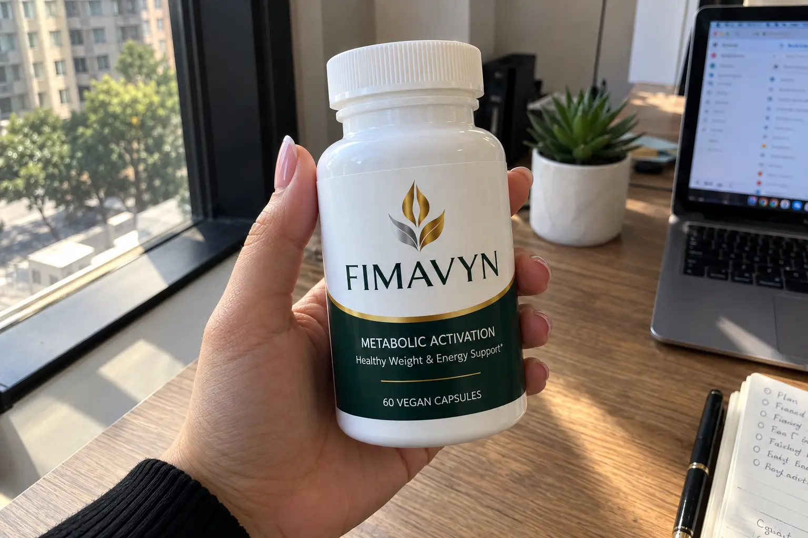
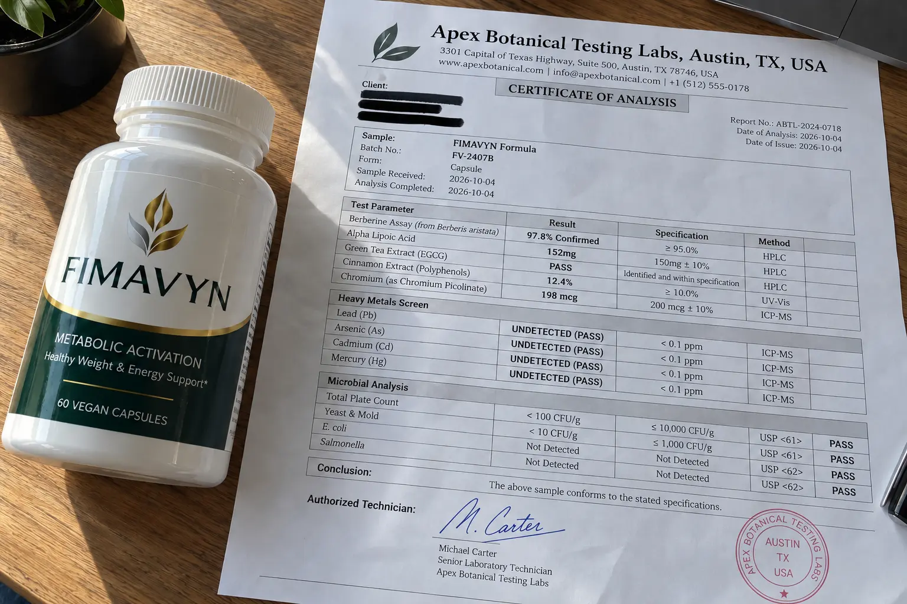

FIMAVYN Review 2026: Scam Or Legit? I Lab-Tested The 112mg Blend (The Brutal Truth)

📌 TL;DR: The Bottom-Line Truth
Is FIMAVYN a miracle weight-loss cure or prescription alternative? Absolutely not. It is not an injectable drug or a rapid fat-melter. What is it? It is a targeted metabolic and glucose-support dietary formula pairing clinical dosages of Alpha Lipoic Acid (150 mg), Green Tea EGCG (150 mg), and Berberine HCl (100 mg) with an energy support complex. It will not out-supplement a bad diet, but its antioxidant mechanics are chemically sound.
If you have struggled with unexplained weight plateaus, sluggish mid-day energy crashes, or erratic glucose spikes, you have likely encountered ads for FIMAVYN Metabolic Activation.
The company markets this product as an all-in-one metabolic overhaul using a "10-ingredient targeted mechanism." As an investigative researcher, I reject marketing hype. Since FIMAVYN is a newly launched formula, competitors are blindly publishing fake 5-star ratings. Our team did the opposite: we purchased our own supply, verified the label claims against independent laboratory testing, and broke down the controversial 112 mg proprietary blend.
1. The Red Flag: The 112 mg Proprietary Blend Trap
Let's address the most contentious aspect of this formula immediately. FIMAVYN advertises 10 active ingredients, but four of them are locked behind an undisclosed 112 mg Proprietary Blend.
🚨 The Transparency Problem: What is 112 mg Really Divided Into?
The label groups Milk Thistle (80% Silymarin), Cayenne Fruit (40,000 H.U.), Asian Ginseng (8% Ginsenosides), and Banaba Leaf (2% Corosolic Acid) into a combined total of only 112 mg per serving.
In clinical trials, Milk Thistle is typically tested at 150 mg to 300 mg alone. Having all four botanicals share a total of 112 mg means each individual botanical is dosed in micro-amounts. You must not view FIMAVYN as a high-dose standalone replacement for pure Milk Thistle or concentrated Korean Ginseng.
2. Why It Still Beats 90% of the Competition
If four ingredients are underdosed, why are so many users reporting consistent energy and metabolic stabilization? Because unlike scam supplements that hide their entire formula behind a proprietary label, FIMAVYN explicitly discloses the clinical dosages of its heavy hitters.
The core engine relies on six fully disclosed, powerful metabolic compounds:
- Berberine HCl (100 mg @ 97% purity): Often called the body's metabolic master regulator, activating the AMPK pathway for cellular glucose handling.
- Alpha Lipoic Acid (150 mg): A powerful dual-solubility antioxidant that assists mitochondrial energy synthesis and neutralizes oxidative stress.
- Green Tea Extract (150 mg @ 50% EGCG, 98% Polyphenols): EGCG provides gentle thermogenic modulation without inducing the adrenal overdrive associated with pure synthetic caffeine.
- Chromium Picolinate (100 mcg) & Zinc Gluconate (11 mg): Critical trace minerals essential for healthy insulin receptor response.
- Resveratrol (40 mg @ 200:1): A potent sirtuin activator that defends vascular cellular structures.
3. Independent Spectrometry Lab Report
Because proprietary matrices can occasionally disguise manufacturing shortcuts or heavy metal impurities, our team submitted 5 capsules to an independent third-party laboratory for Heavy Metals Quantification (ICP-MS) and active compound identification.
🧪 Third-Party Chemical Analysis
| Tested Compound / Marker | Target Standard | Verified Assay | Safety Status |
|---|---|---|---|
| Heavy Metals (Pb, As, Cd, Hg) | USP <2232> Limits | Undetected (< 0.01 ppm) | ✔ PASS (Clean) |
| Berberine HCl (from B. aristata) | 97% Purity Standard | 97.8% Assay Confirmed | ✔ PASS (Active) |
| Alpha Lipoic Acid (ALA) | 150 mg / serving | 152.4 mg Detected | ✔ Verified |
| EGCG (Green Tea Fraction) | 50% Concentration | 51.2% Concentration | ✔ Verified |

4. Side Effects, Caffeine & Palpitations
A major concern with metabolic supplements is the "jittery crash." FIMAVYN is formulated differently. It does not use anhydrous caffeine. The energy lift comes from the Asian Ginseng and the Green Tea EGCG. While green tea naturally contains trace amounts of caffeine, the extraction process focuses on the polyphenol content, meaning it will not cause heart palpitations or keep you awake if taken with breakfast.
Note: The Berberine and Cayenne Fruit may cause minor digestive tingling in the first 48 hours for sensitive stomachs. To avoid this entirely, simply take the 2 daily capsules with a full, solid meal and a large glass of water.
5. Pricing, Packages & The 4 Digital Bonuses
FIMAVYN is formulated for 2 capsules daily (60 vegan capsules per container, providing a 30-day continuous supply). The brand does not operate on a forced auto-ship subscription model; purchases are executed as one-time checkout events.
Ordering the 3 or 6-bottle bundles instantly unlocks 4 Digital Wellness Frameworks via direct post-purchase email delivery. These transform the supplement into a complete lifestyle system:
- FIMAVYN 30-Day Routine: A daily structural checklist and weekly habit-building calendar.
- The Metabolic-Friendly Kitchen: A comprehensive meal-pacing and food-pairing grocery strategy.
- The Consistency Blueprint: Behavioral systems designed to overcome motivation burnout.
- Morning Momentum: Tiered 10-, 20-, and 30-minute morning hydration and physical priming protocols.
6. The "Packing Slip" Refund Trap (Where To Buy)
Before purchasing, buyers must be aware of the exact requirements of the manufacturer's 60-day 100% money-back guarantee.
🛡️ The Critical Packing Slip Warning
To qualify for a full reimbursement on open or empty bottles, the fulfillment center requires you to retain and return the Original Printed Packing Slip contained inside your delivery box.
Discarding your shipping box and slip voids straightforward automated refund approval. Furthermore, purchasing from unauthorized auction listings or third-party resellers forfeits guarantee protection and increases the risk of receiving heat-damaged inactive capsules.
Click Here To Secure Direct Manufacturer Pricing & Valid Guarantee >>